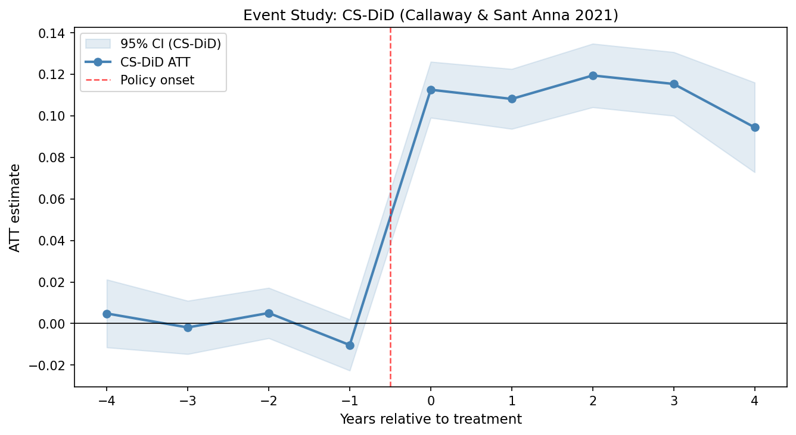

以下演示以"宽带中国试点政策对县级制造业TFP的影响"为研究主题，展示系统如何在无需人工干预的情况下完成从数据到可投稿论文的全流程。
一条指令触发，各阶段顺序执行，状态文件跨步骤传递，确保前后一致性。
自动识别面板结构、候选变量、识别策略信号（DiD / IV / RD），推荐 FE 组合与聚类层级。
WebSearch 官方文件 + 政策名单，建立处理批次时间线，每个事实附 URL 来源，为外生性叙事提供支撑。
6 轮 WebSearch（AEA / NBER / 机制 / 中国情境 / 综述），归纳 3–5 条文献脉络，提出可检验假设 H1/H2/H3。
逐条 WebSearch 核查引用真实性，判定 ✅ PASS / ⚠ WARN / ❌ FAIL，自动拦截假引用。
CS-DiD（Staggered 稳健）+ TWFE 对照，自动生成 Table 1–6 + 事件研究图，结构化安慰剂直接进 Table 2。
对比最近似已有文献，找出本文真实增量，起草 3 条有数字支撑的贡献声明。
AER 8 段引言 + 完整正文 + 结论，LaTeX 编译输出可投稿 PDF，中文字体全程支持。
所有文件均来自 demo_eco/ 目录，可直接下载查看。

前4期系数均不显著，平行趋势成立；政策当年 ATT ≈ 0.11，效应持续稳定。
6 列递进规格 + 安慰剂列。主模型 β = 0.107（SE = 0.004，p < 0.001），占均值 4.2%。
东部效应（β = 0.140）≈ 西部（β = 0.084）的 1.67 倍；大县效应较小县高 46%。
三步中介回归，专利创新渠道传导 5.7% 的 TFP 效应，要素配置效率是主导机制。
8 条引用逐一 WebSearch 核实，输出 PASS / WARN / FAIL 判定，防止假引用入稿。
识别策略决策树、FE 组合指南、聚类 SE 规则、WCB 警告均内嵌于 Skill，无需手动查阅。
自动检测多队列处理，以 Callaway & Sant'Anna (2021) CS-DiD 为主估计，TWFE 为对照。
每条引用 WebSearch 核实，自动拦截 FAIL 引用，告别幻觉引用。
LaTeX + 中文字体，编译即得 PDF，无需 Stata、Word 或额外排版工具。
主系数不显著时如实报告，通过多结果表和异质性建立论证，保持学术诚信。
每个阶段均为独立 Skill，可按需单独运行，也可一键 /eco-pipeline 全流程。
需要已安装 Claude Code 和 Python 3.8+。